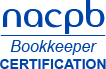

Papyrus Financial LLC

WELCOME TO PAPYRUS FINANCIAL
Papyrus Financial is Certified Public bookkeeping Company located in the coastal Virginia area. Papyrus Financial performs virtualized bookkeeping tasks for small businesses or professionals. Virtualized bookkeeping allows for ease of access, clarity, speed and accuracy for the customer. Select professional software is used to allow you to monitor and share your financial data easily while on the job or on the go.
HOW DOES VIRTUAL BOOKKEEPING WORK?
There are a couple important steps needed to implement this
process. Take a look at our Get Started page to get the full
breakdown.
MODERN SOFTWARE
Papyrus Financial promotes a variety of the latest stable financial software. Newer technology means easier and faster access for you as a professional. Look for updates soon regarding our selected software tools which can enhance your productivity.
OUR TECHNIQUE
Papyrus Financial uses a system of bookkeeping that enables the business owner to project cost, track overhead, and acquire the financial position your company. We individualize your books to your needs. Utilizing Papyrus Financial your business will have an optimal bookkeeping system that reflects the true value of your business. We perform an in-depth analysis of your business isolating problems in day-to-day operations, so we can begin working towards and maintaining a solution together.